Course Staff
The best way to contact the staff is through Piazza. If you need to contact the course staff via email, we can be reached at cs188@berkeley.edu. You may contact the professors or GSIs directly, but the staff list will produce the fastest response. All emails end with berkeley.eduInstructors
Stuart Russell
Note: Please do not email logistics questions about enrollment, etc, to the professors. Please direct these questions to piazza or cs188@.
Office hours: See @29 piazza.
Email: russell@
Dawn Song
Note: Please do not email logistics questions about enrollment, etc, to the professors. Please direct these questions to piazza or cs188@.
Office hours: See @29 piazza.
Email: dawnsong@GSIs
Albert Yu
Head TAEmail: Admin cs188@, Personal albertyu@
- My 10-year old brother wrote my bio for me: "I only let Jimmy eat peanuts I make. I live on Peanut Ave. I do peanut gardening. My friend is Jimmy. My PhD is farming."

Amitav Baruah
Email: amitav@- Hi! I’m a 4th year EECS major from San Jose. I love sports (especially basketball, tennis, soccer, frisbee, and football), cooking, and listening to music, along with watching tv, movies, and anime. I also play League/Valorant/Apex/TFT :') Looking forward to meeting y’all this semester and feel free to hit me up anytime :)
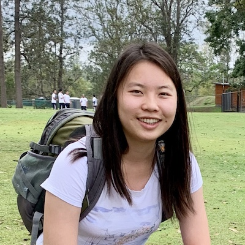
Angela Liu
Email: aliu917@- Hey! I’m Angela and currently a third year studying CS. I’ve lived in the Bay Area my entire life and I love it here! When I’m not studying, I like to read, play golf, travel, and eat Asian desserts. I'm really excited to be teaching 188 and hope you all have a great semester!

Ayush Kamat
Email: akamat@- Hi there! I'm a 3rd year CS and Math major from the Los Angeles area. Outside of school I love to listen to and play music, and I also love to cook and make food! I'm super excited to teach y'all and I'm looking forward to a great semester!
Carl Qi
Email: daguqihanwen@- Hi! I’m a senior majoring in cs and math. My research interests are deep reinforcement learning and unsupervised learning, and in my free time I like to play the guitar. Please feel free to reach out and talk to me about anything!
Daniel Filan
Email: daniel_filan@- Hi! I'm Daniel, a 5th year PhD student in CS. After growing up in Australia, I moved to the US to work with Stuart Russell and the Center for Human-Compatible AI, and now I work on trying to understand neural networks by breaking them into pieces. My hobbies include playing go badly and going on walks. I look forward to helping you all learn about AI this semester!
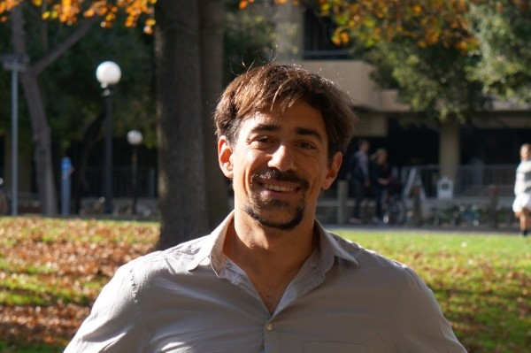
Dimitris Papadimitriou
Email: dimitri@- Hi Everyone, I am Dimitri, a 3rd year PhD student working in Control Theory and Robotics. In my free time I enjoy swimming, mostly short distances. I am looking forward to working with you all during the semester!
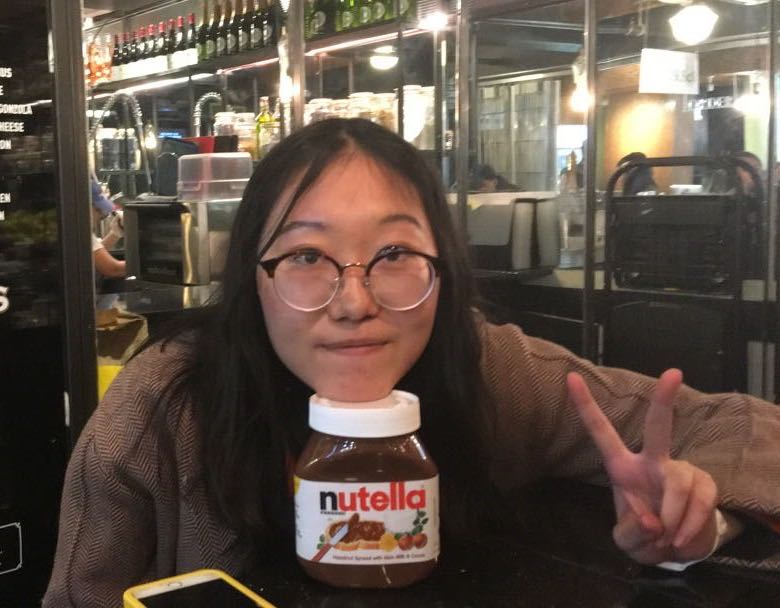
Emma Tao
Email: jiayue_tao@- Hi everyone! I’m a 4th-year CS/Philosophy/Econ major, born and raised in Beijing, China. I love everything in the intersection (or union) of humanities and tech, and my special talent is the ability to nap everywhere. (Sadly this semester I’ll just be napping at home.) In my free time, I like to read long novels and rewatch Rick & Morty for the thousandth time. Look forward to getting to know you all and learn together!
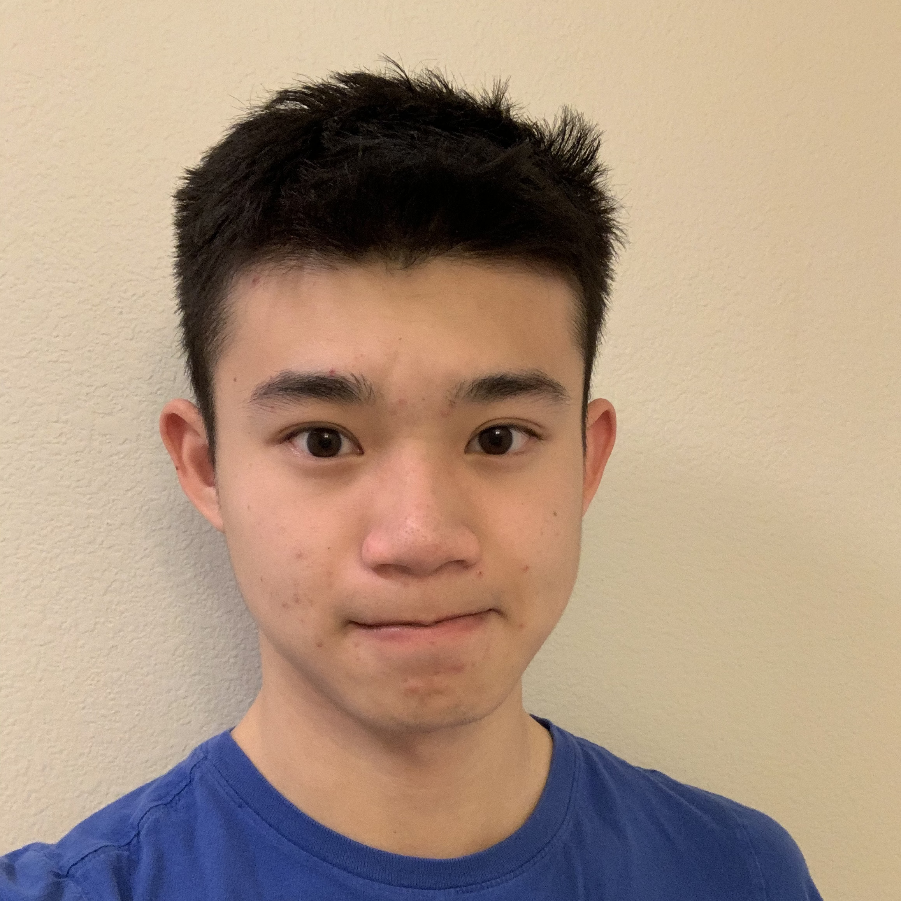
Jeffrey Tao
Email: jtao@- Hi, I'm Jeffrey! Feel free to talk to me if you're interested in RL research.
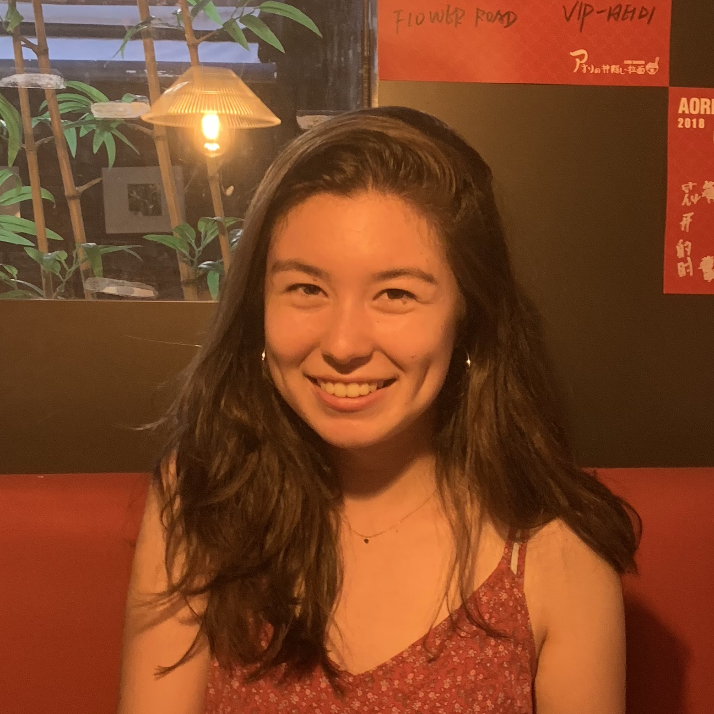
Jennifer Grannen
Email: jenngrannen@- Hi! I’m Jennifer, a fourth year CS major and I’m really excited to TA 188 this semester! My current research focuses on robotic cable manipulation. In my free time, I love hiking, making music, and being outdoors :) Feel free to reach out to talk about anything!

Jiaheng Zhang
Email: jiaheng_zhang@- I am a third-year Ph.D. candidate in Computer Science at UC Berkeley, where I am very fortunate to be advised by Prof. Dawn Song. My research interests lie in computer security and cryptography, especially zero-knowledge proofs and their applications on blockchain and machine learning models.
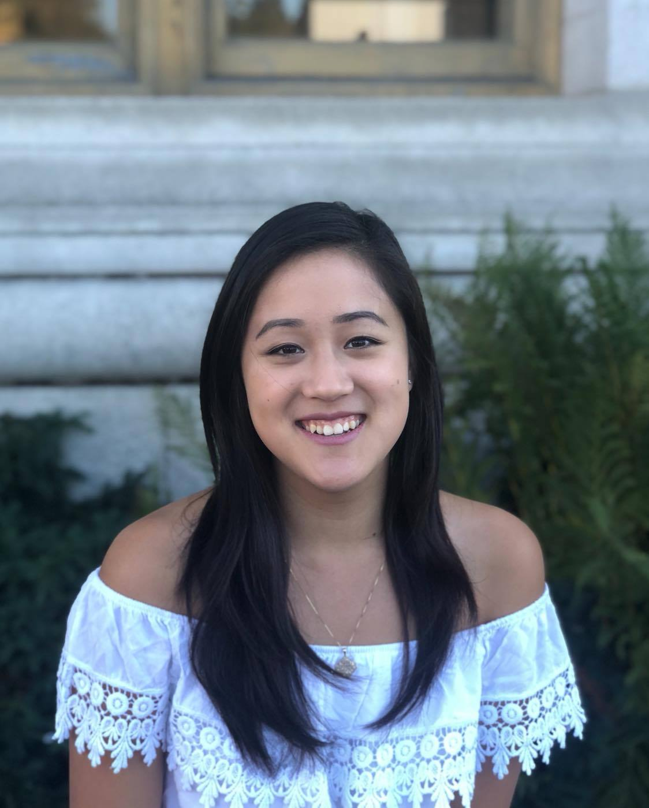
Jocelyn Chen
Email: jocelynchen1246@- Hello! I'm Jocelyn, a fourth year CS major from the Bay Area. In my free time, I like to dance, watch Netflix, and play video games (mostly genshin and league). Feel free to reach out to me to talk about anything. I’m looking forward to a great semester!
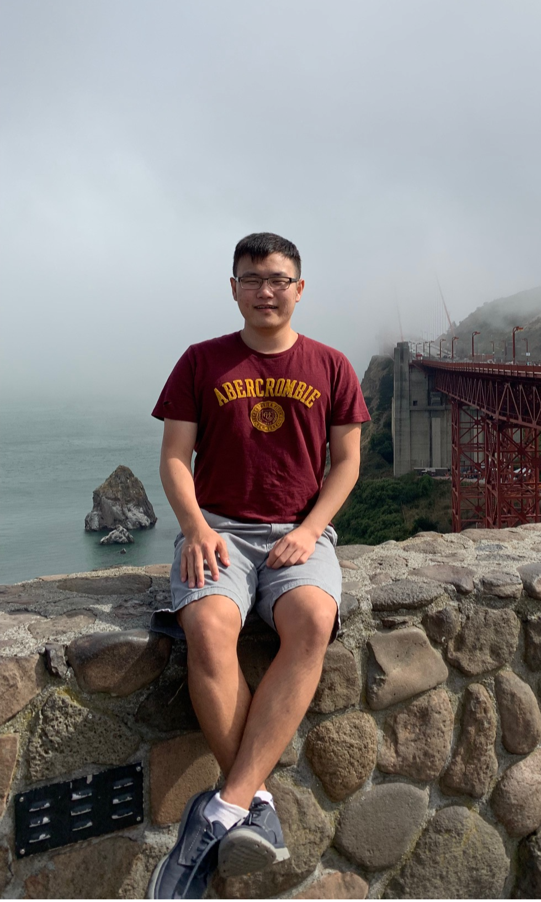
Jonathan Yang
Email: jy2370@- Hi everyone! I am a 3rd year EECS undergrad who loves robotics and artificial intelligence. My hobbies include tinkering with drones, playing clarinet in a wind ensemble, and watching good tv shows/anime. I'm excited to get to know all of you!
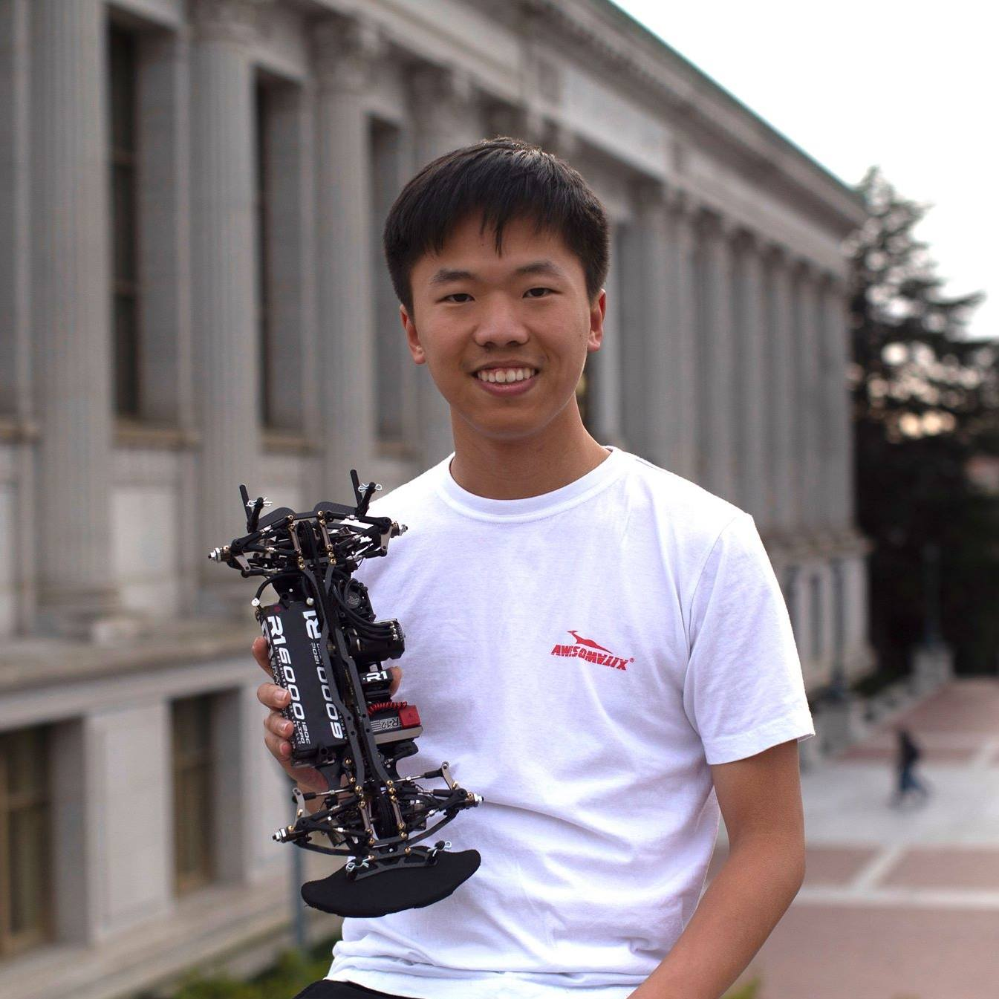
Mesut Yang
Email: xiaocheng.yang@- Hello everyone! I am an EECS 5th-Year-Master student. This will be the 7th time I am a TA for CS 188. My current research interest lies in the intersection of deep reinforcement learning and human-robot-interaction. In my free time, I like to hike with friends, and to travel to race radio-controlled vehicles. Feel free to come talk to me about anything!
Nikita Samarin
Email: nsamarin@- Hi! I’m Nikita, a third-year PhD student in EECS, advised by David Wagner and Serge Egelman. My research interests are wide-ranging, and include Adversarial Machine Learning, algorithmic fairness and transparency, and usability of security and privacy solutions. Outside of my work, I enjoy being outdoors, reading books, and trying out new things to cook! I am looking forward to teaching you, and please feel free to reach out to me just about anything, even if it’s not directly related to the course!
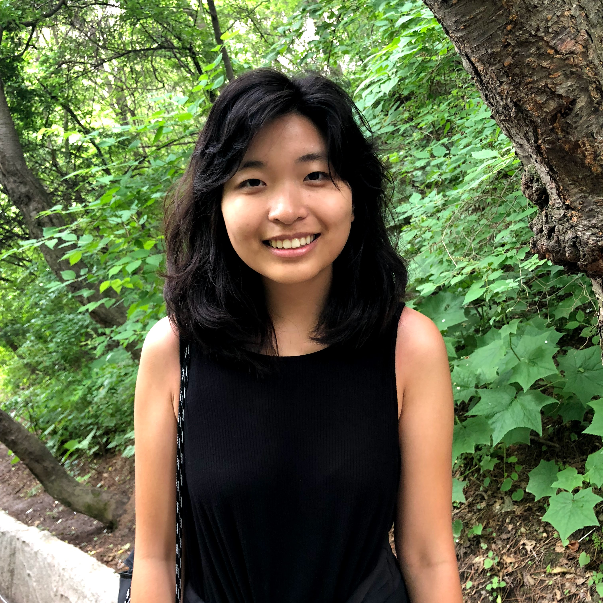
Regina Wang
Email: rlwang@- I'm a junior CS major and Political Economy minor. Love rereading children's books, baking, and getting destroyed at tennis in my free time. PSA: If you want to read more, check out Libby for a free ebook library or check out your local library's ebook offerings. Not affiliated, just a huge fan.
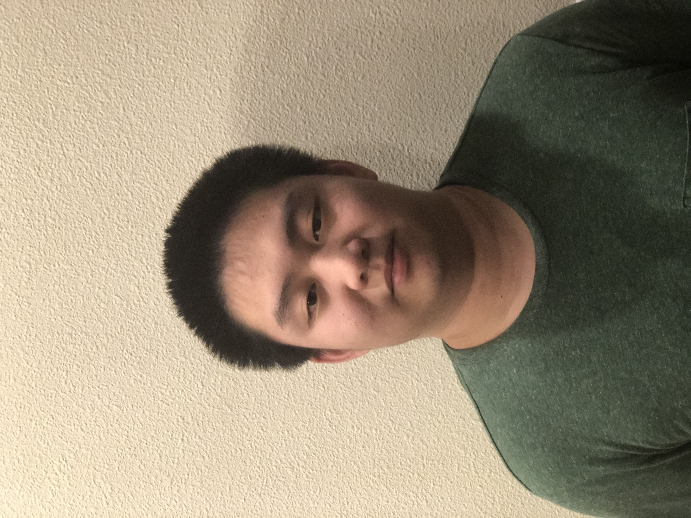
Robert Lin
Email: robertlin1357@- Hello! I’m a junior from the Bay Area majoring in CS and Applied Math. In my spare time I find myself playing video games, watching anime, or playing piano. CS188 has been one of my favorite classes to date, and I think Pacman serves as a great visual representation of many of the concepts presented in this class. Looking forward to a great semester!
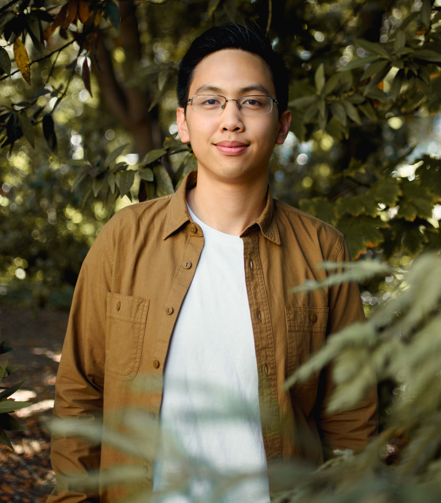
Ryan Koh
Email: ryan_koh@- Hi, I’m a CS student from SoCal, looking forward to meeting you all this semester! CS188 is a great class, where you not only learn about AI, but also develop a love-hate relationship with Pacman. Feel free to reach out about anything, and let’s have a great semester! We stan robots <3 (Website: kaipinryankoh.github.io)
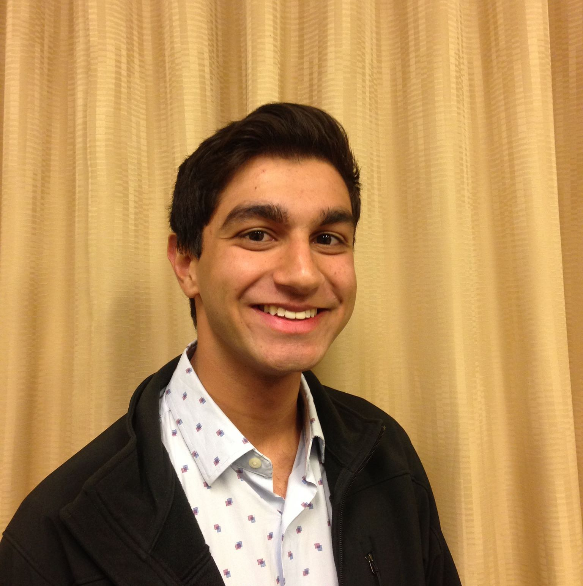
Saagar Sanghavi
Email: ssanghavi404@
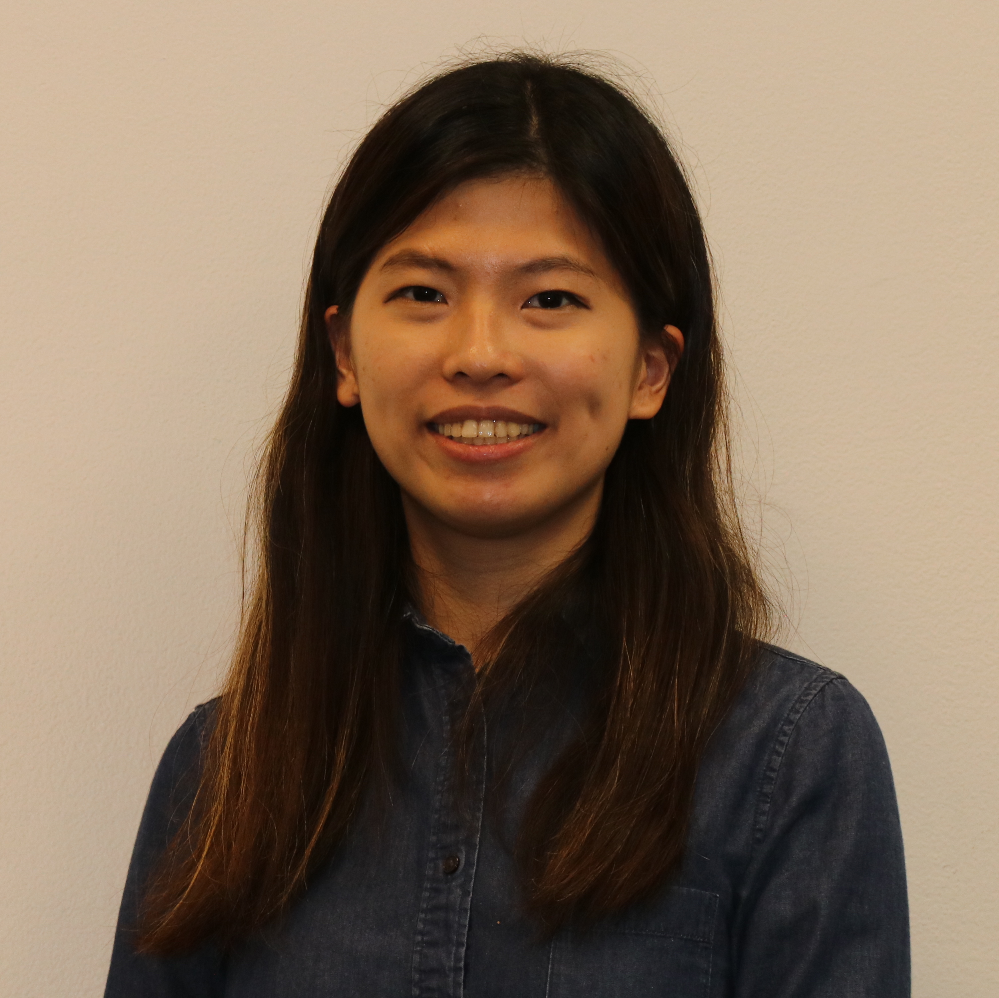
Wendy Lin
Email: yuwen.lin@- I'm a PhD student in the EECS department. My research interests lie broadly in modeling, optimization, control, and their applications to smart buildings. In my free time, I enjoy hiking, reading, and watching anime.
Xinyun Chen
Email: xinyun.chen@- Hi! I am Xinyun, a 4th-year Ph.D. student working with Prof. Dawn Song. My research lies at the intersection of deep learning, programming languages, and security. I am excited to meet you all, and feel free to reach out!
Yanlai Yang
Email: yyang22@- Hello! I’m a third-year CS and applied math major from Shanghai. My research is currently focused on reinforcement learning. This is my third time being a TA for this course and I am really excited to meet everyone! Outside of school, I love to play card games (especially contract bridge) and solve various kinds of puzzles.